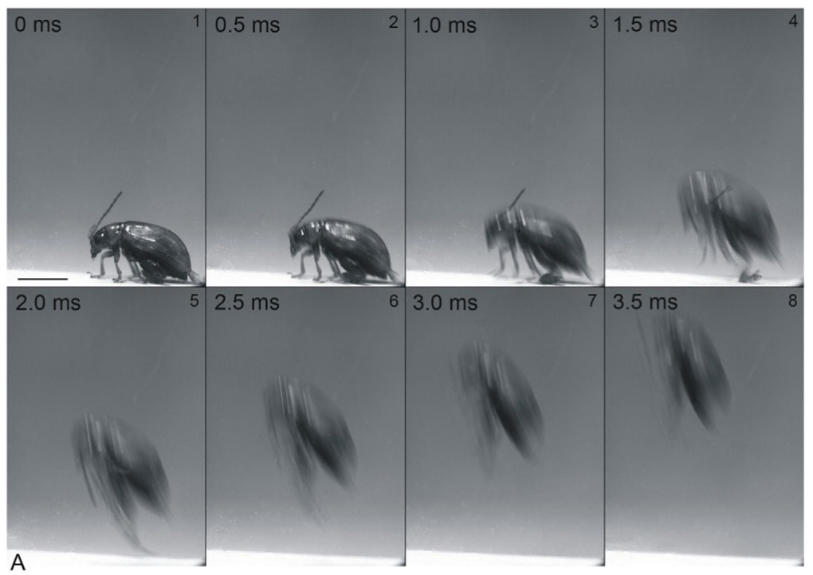
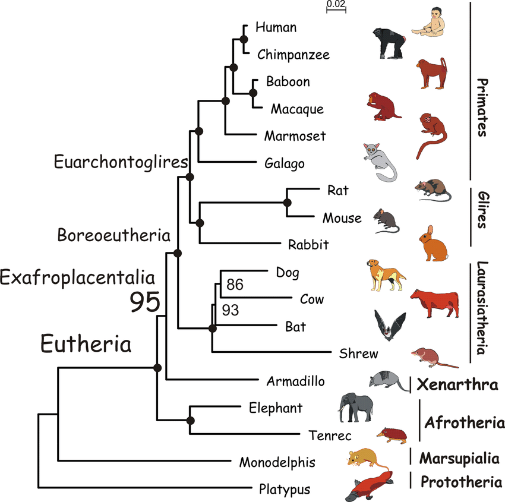
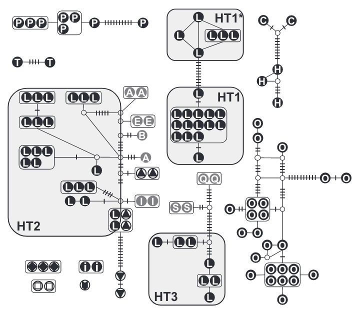
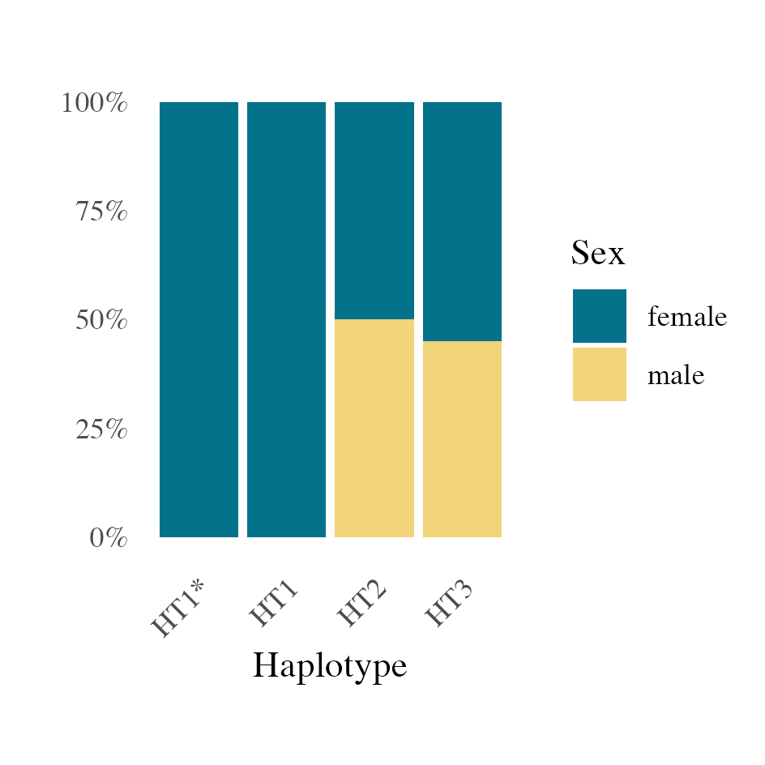
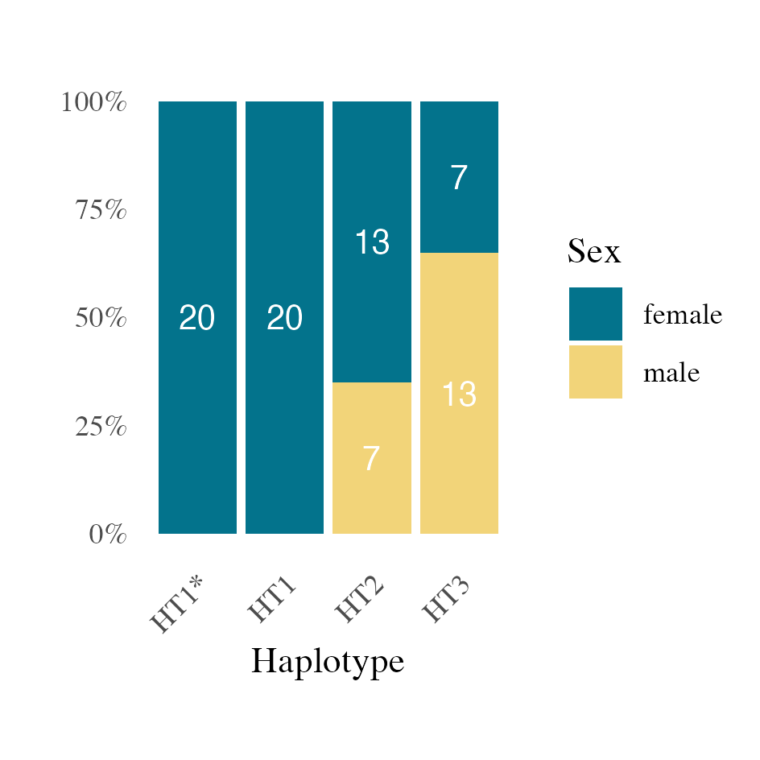
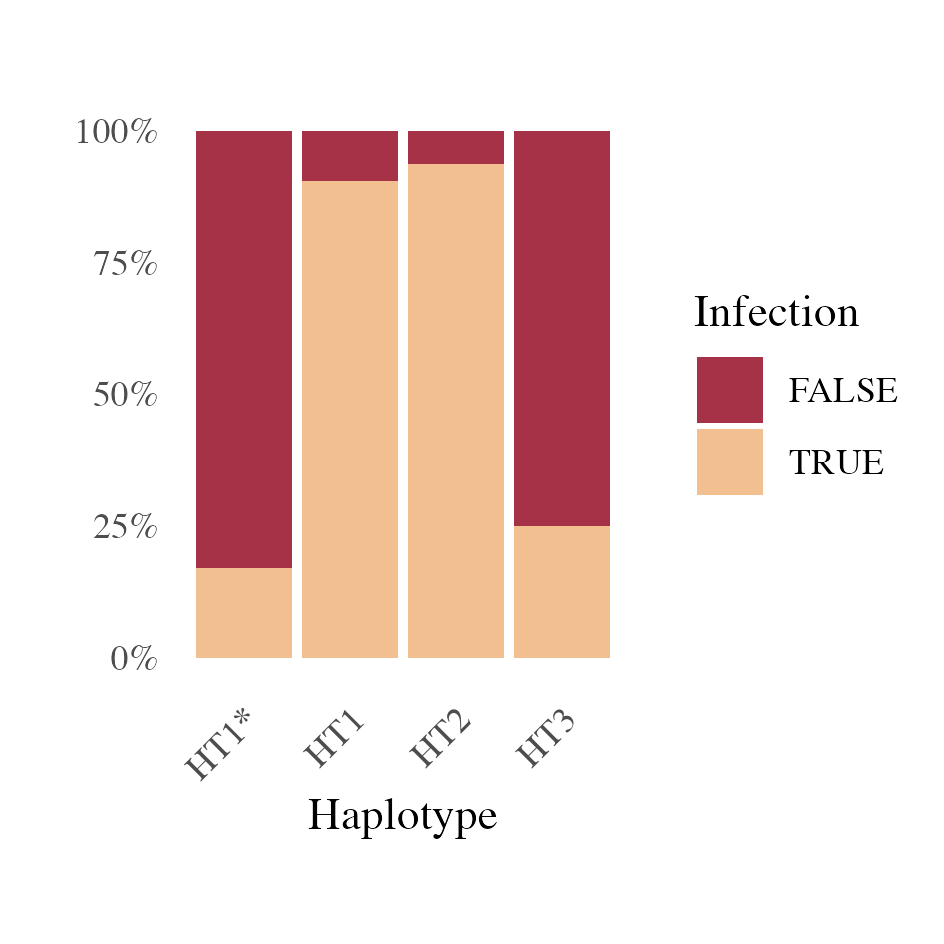

All-female beetles and Wolbachia
All-female beetles and Wolbachia
Sometimes, biological research can be difficult to understand, and also difficult to explain, especially for those who don’t work in the related fields. Even for people with proficiency under the same roof “Biology”, the topics can also be completely poles apart.
Here, I will try to use easy terms, and method called “scrollytelling”, to tell you what I did in my bachelor thesis.
Imaging, in a sunny day at spring, we went for a comfortable hike outside Hamburg …
There was a river flowing through the meadow, the weather has been warmed up for few weeks. We saw a tall bush by the river, with some beautiful pink flowers blooming on it.
And when we look closer …
We saw some dark, shiny little beetles sitting on the leaves.
We looked into the literature, it turns out this beetle should be Altica lythri, belongs to a family of beetles who are absolute experts of jumping.
We wanted to know more about them, so we took some beetles back to the lab and tested their genetic identity with DNA-Barcoding. Which means a specific gene section was compared within the group, and with related species.
But, it tells us something unexpected …
Normally, if we talk about a monophyletic group (what a “species” should be),
we will expect their genes to be very similar within the group, coming from the same ancestor …
And show a distinct difference towards others.
In our case, A. lythri (L) forms multiple trees with other related species. We call such subgroups of one species haplotypes. Jäckel, Mora, and Dobler (2013)
Such as the HT1 …
A similar, but different haplotype, HT1* …
HT2 …
and HT3 …
Evolutionary speaking, these haplotypes have different histories, we have to treat them as different. So we categorised them by their haplotypes, and investigated each group further.
Then we found out something unusual …
In HT1 and HT1*, there are only females.
Considering the sample size we have, the chance that we haven’t encounter any male individuals, but the true sex ratio be 1:1 on the field, is extremely low.
In other words, there must be a significant cause for this unusual sex ratio.
We did some digging and found out that there’s a bacterium, called Wolbachia, being known for the ability to push the sex ratio of its insect host towards female.
Interesting! Maybe we should also take a look at the Wolbachia infection of these beetles …
It turns out some HT3 are infected …
HT2 are heavily infected …
HT1 too …
but HT1* are not quite a fan of Wolbachia
Wait, this doesn’t explain things very well.
HT1 and HT1* are all-female, but they are not all infected.
HT2 and HT3 have normal males, but HT2 are heavily infected.
It turns out Wolbachia also has different types. We call them strains.
Most HT3 are infected by strains wA2 or strain wB.
Most HT2 are infected by both wA2 and wB.
All HT1 are infected by wA1.
Which is also the main strain living with HT1*.








